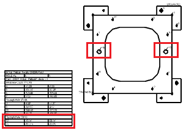
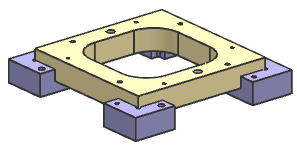
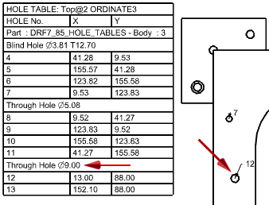
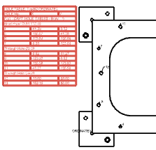
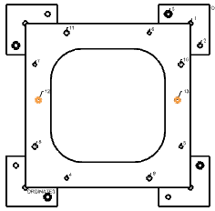
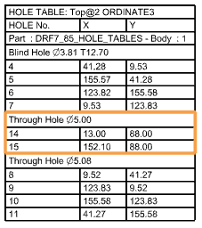

Update a hole table
You will update the through holes in the base plate and update the hole table for the base plate.
-
Examine the hole table for the base plate and notice the dimension of the through holes.

-
Start the Modeling application.

-
Double-click drf7_85_hole_tables to make it the work part.
-
In the Part Navigator, double-click Simple Hole (28) to edit the hole’s parameters.
-
In the Hole dialog box, in the Form and Dimensions group, change the Diameter dimension to 5 mm, and then click OK to accept the change and close the dialog box.
-
In the Assembly Navigator
 , double-click drf7_85_hole_tables_dwg to make the drawing the active part.
, double-click drf7_85_hole_tables_dwg to make the drawing the active part.
-
Start the Drafting application.
Examine the base plate and note that the holes have updated in the drafting view, but the hole table still displays the old value for the hole diameter.

-
On the Table toolbar, click Hole Table
 .
.
-
In the Hole Table dialog box, in the Type group, select Update Table.
-
With Select Table highlighted, select the table containing the hole information.

-
With Select Hole highlighted, pick the two changed holes in the base plate.

-
Click OK to update the table.
Notice that the hole labels change and the hole information is repositioned in the hole table.

Tip
The display of the hole table and hole labels can be controlled from the settings on the Drafting→Hole Table tabs in the Customer Default dialog box.
-
Close all parts.